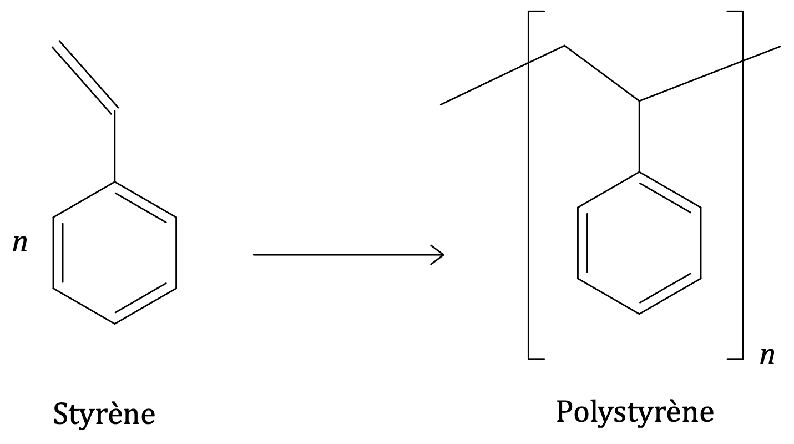

Introduction
Les molécules organiques contiennent essentiellement des atomes de carbone et d'hydrogène et souvent des atomes d’oxygène ou d’azote. Elle peuvent être synthétiques ou naturelles et proviennent alors souvent du pétrole.
La chimie organique étudie en particulier leur structure chimique, leurs propriétés, leurs caractéristiques, leur composition chimique, leurs réactions chimiques et leur préparation (par synthèse par exemple). Ces composés peuvent comprendre d’autres éléments chimiques, comme les halogènes (fluor, chlore, brome, iode) ainsi que le bore, le silicium, le phosphore, le soufre, ; plus rarement, le lithium, le sodium, le magnésium, le cuivre, le titane, le potassium, le fer, le cobalt, le zinc et le plomb. Cette dernière chimie est appelée organométallique.
À l’issue de ce chapitre, dans lequel sont présentées les principales transformations de structure en chimie organique, vous devrez être capables :
-
de distinguer une modification de chaîne d’une modification de groupe caractéristique ;
-
de déterminer la catégorie d’une réaction (substitution, addition, élimination) à partir de l’examen de la nature des réactifs et des produits.
Modifications de la chaîne carbonée
Raccourcissement de la chaîne carbonée
Craquage
Le craquage désigne, en pétrochimie, la thermolyse du pétrole et de ses dérivés liquides. L’opération consiste à casser une molécule organique complexe en éléments plus petits, notamment des alcanes et des alcènes.
Les conditions de température et de pression, ainsi que la nature du catalyseur sont des éléments déterminants du craquage.
Vapocraquage (craquage à la vapeur)
Le vapocraquage est un procédé pétrochimique qui consiste à obtenir, à partir d’alcanes lourds ou légers, des alcènes (éthylène, propylène) en présence d’eau.
Ces alcènes sont principalement à la base de l’industrie des matières plastiques (polyéthylène, polypropylène, etc.) et servent également à la production de bien d’autres produits dans les domaines de la cosmétique, la pharmacie, la construction, les industries électrique, électronique, le textile, l’aéronautique, etc.
Modification de la structure de la chaîne carbonée
Reformage catalytique
Le reformage catalytique est une famille d’opérations chimiques, effectuées sous haute pression et à haute température (de l’ordre de 550 °C) en présence d’un catalyseur, au cours desquelles des hydrocarbures légers (linéaires, ramifiés, cycliques, …) sont transformés en essence.
- Remarque
- On appelle essence un mélange d’hydrocarbures dont la combustion est performante. On retrouve 20 à 30% d’alcanes, 5% de cycloalcanes, 30 à 40% d’alcènes, 30 à 45% d’hydrocarbures aromatiques de la famille du benzène
Exemples de reformage
Isomérisation
Une isomérisation est la transformation d’un alcane à chaîne linéaire en un isomère de constitution ramifié, à température modérée (120 °C à 200 °C).
Cyclisation
Une cyclisation est la transformation d'un alcane linéaire en cyclane, souvent ramifiés, à température modérée (120 °C à 200 °C). Cette transformation n’est possible que pour des alcanes possédant au moins cinq atomes de carbone.
- Remarque.
-
Une cyclisation produit du dihydrogène.
Déshydrocyclisation
La déshydrocyclisation permet d’obtenir des dérivés benzéniques et du dihydrogène en réalisant la cyclisation à une température plus élevée (voisine de 500 °C) et en présence d’un catalyseur (exemple le platine Pt). Elle s’accompagne alors d’une déshydrogénation (élimination d’une molécule de dihydrogène) et conduit à l’apparition d’un cycle benzénique.
Allongement de la chaîne carbonée
Alkylation
L’alkylation consiste à substituer (remplacer) un atome d’hydrogène d’une chaîne carbonée par un groupe alkyle. On allonge la chaîne d’un alcane en le faisant réagir avec un alcène (opération inverse du craquage).
Son intérêt est de produire des espèces chimiques à fort indice d’octane.
Polymérisation par polyaddition
La polymérisation par polyaddition permet de rallonger la chaîne carbonée principale en réalisant une addition répétée d’un très grand nombre de molécules insaturées appelées monomères. Elle conduit à une macromolécule appelée polymère.
- Exemple.
-
Réaction de polymérisation de $n$ molécules de monomère styrène. $n$ est appelé indice (ou degré) de polymérisation et le groupe est appelé motif du polymère.

Transformation du groupe caractéristique d’une molécule organique
Une réaction chimique peut également modifier le groupe caractéristique d’une molécule.
-
Lors d’une réaction acido-basique, un groupe carboxyle peut céder un proton, un groupe carboxylate peut en capter un.
-
Lors de l'oxydation d’un alcool primaire ou secondaire, le groupe hydroxyle est transformé en groupe carbonyle.
-
Un groupe carbonyle situé en position extrême sur une chaîne carbonée peut être oxydé en groupe carboxyle.
-
…
À quelles catégories peut appartenir une réaction impliquant un composé organique ?
Les réactions organiques sont des réactions chimiques impliquant des composés organiques. Les principaux types de réactions organiques sont l'élimination, l'addition, la substitution, le réarrangement et les réactions d’oxydoréduction impliquant des composés organiques.
Ces réactions sont utilisées en synthèse organique pour construire de nouvelles molécules organiques. La production de nombreuses substances chimiques, comme les médicaments, les plastiques, les additifs alimentaires, etc., met en jeu des réactions organiques.
Réactions de substitution
Substitution
Une réaction de substitution est une réaction chimique au cours de laquelle un atome ou groupe d’atomes, lié à un carbone par une liaison simple, est remplacé par un autre atome ou groupe d’atomes.
Réactions d’addition
Addition
Une réaction d’addition est une réaction chimique au cours de laquelle un atome ou un groupe d’atomes vient se fixer sur des atomes initialement liés par une double ou une triple liaison.
Réactions d’élimination
Élimination
Une réaction d'élimination est une réaction chimique au cours de laquelle deux atomes ou groupes d’atomes voisins sont retirés d’une molécule. Entre les 2 atomes porteurs de ces groupes d’atomes se forme une double ou une triple liaison.
- Remarque.
-
On parle aussi d’élimination lorsqu’une molécule subit une cyclisation.